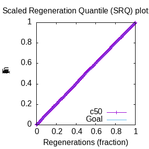
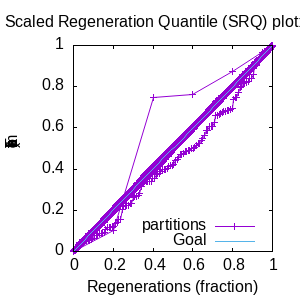

MCMC Post-hoc Analysis
Data & Model
| Partition | Sequences | Lengths | Alphabet | Substitution Model | Indel Model | Scale Model |
|---|
| 1 |
25.fasta |
111 - 131 |
RNA |
S1 = gtr +> Rates.gamma(n=4) +> inv +> Covarion.hb02 |
I1 = rs07 |
scale1 ~ gamma(0.5, 2) |
Scalar variables
| Statistic | Median | 95% BCI | ACT | ESS | burnin | PSRF-CI80% | PSRF-RCF |
|---|
| likelihood |
-2703 |
(-2728, -2677) |
14.66 |
24549.0 |
291.0 |
1.0 |
0.9995 |
| #indels |
55 |
(48, 64) |
14.23 |
25303.0 |
367.0 |
0.9091 |
0.9967 |
| #substs |
727 |
(708, 744) |
29.52 |
12196.0 |
282.0 |
0.9684 |
0.9991 |
| rs07:mean_length |
1.967 |
(1.557, 2.488) |
7.245 |
49693.0 |
207.0 |
1.001 |
0.9979 |
| rs07:rate |
0.01524 |
(0.009231, 0.02162) |
9.933 |
36244.0 |
328.0 |
0.9999 |
0.9981 |
| P1/#indels |
55 |
(48, 64) |
14.23 |
25303.0 |
367.0 |
0.9091 |
0.9967 |
| P1/#substs |
727 |
(708, 744) |
29.52 |
12196.0 |
282.0 |
0.9684 |
0.9991 |
| P1/likelihood |
-2703 |
(-2728, -2677) |
14.66 |
24549.0 |
291.0 |
1.0 |
0.9995 |
| P1/prior_A |
-407.6 |
(-458.6, -363.5) |
15.95 |
22567.0 |
371.0 |
1.0 |
0.9948 |
| P1/|A| |
164 |
(153, 176) |
55.97 |
6432.0 |
715.0 |
0.96 |
0.9945 |
| P1/|indels| |
106 |
(90, 126) |
19.36 |
18592.0 |
449.0 |
0.9388 |
0.9944 |
| Covarion.hb02:pi1 |
0.6397 |
(0.5333, 0.7459) |
4.66 |
77255.0 |
251.0 |
1.0 |
0.9954 |
| Covarion.hb02:r |
0.5688 |
(0.3101, 0.8807) |
7.41 |
48585.0 |
329.0 |
1.0 |
0.9986 |
| Covarion.hb02:rate |
0.2583 |
(0.1391, 0.4038) |
7.01 |
51356.0 |
332.0 |
0.9998 |
0.9974 |
| Covarion.hb02:s01 |
0.3621 |
(0.1913, 0.582) |
7.206 |
49960.0 |
447.0 |
1.001 |
1.001 |
| Covarion.hb02:s10 |
0.2027 |
(0.1011, 0.3333) |
6.381 |
56415.0 |
219.0 |
1.0 |
0.9977 |
| Rates.gamma:alpha |
1.895 |
(0.8769, 4.076) |
1.857 |
193885.0 |
225.0 |
1.0 |
0.9973 |
| gtr:pi[A] |
0.211 |
(0.1742, 0.2509) |
16.22 |
22196.0 |
911.0 |
0.9998 |
0.9984 |
| gtr:pi[C] |
0.2741 |
(0.2361, 0.3136) |
10.12 |
35569.0 |
294.0 |
1.001 |
1.004 |
| gtr:pi[G] |
0.298 |
(0.2503, 0.3473) |
14.98 |
24031.0 |
751.0 |
1.0 |
0.9928 |
| gtr:pi[U] |
0.2142 |
(0.1823, 0.2483) |
13.95 |
25799.0 |
401.0 |
0.9997 |
0.9938 |
| gtr:sym[AC] |
0.01495 |
(3.305e-07, 0.04986) |
10.04 |
35847.0 |
365.0 |
1.0 |
0.9986 |
| gtr:sym[AG] |
0.1823 |
(0.1131, 0.2637) |
15.54 |
23172.0 |
621.0 |
1.0 |
1.004 |
| gtr:sym[AU] |
0.2697 |
(0.1752, 0.3716) |
16.77 |
21472.0 |
1129.0 |
1.0 |
1.001 |
| gtr:sym[CG] |
0.09085 |
(0.04145, 0.1497) |
22.7 |
15858.0 |
1222.0 |
1.0 |
1.002 |
| gtr:sym[CU] |
0.3926 |
(0.2836, 0.5094) |
16.08 |
22395.0 |
419.0 |
1.0 |
0.9959 |
| gtr:sym[GU] |
0.03351 |
(2.531e-06, 0.07814) |
11.78 |
30551.0 |
353.0 |
0.9999 |
1.01 |
| inv:p_inv |
0.1134 |
(0.04505, 0.1879) |
2.356 |
152776.0 |
193.0 |
0.9999 |
1.005 |
| sigma |
0.04894 |
(2.087e-07, 0.3217) |
7.319 |
49187.0 |
275.0 |
1.001 |
1.002 |
| prior_A |
-407.6 |
(-458.6, -363.5) |
15.95 |
22567.0 |
371.0 |
1.0 |
0.9948 |
| scale |
13.18 |
(8.34, 19.25) |
5.622 |
64035.0 |
153.0 |
1.0 |
0.9975 |
| scale*|T| |
15.36 |
(11.23, 20.8) |
12.93 |
27847.0 |
513.0 |
1.0 |
0.9983 |
| scale1 |
13.18 |
(8.34, 19.25) |
5.622 |
64035.0 |
153.0 |
1.0 |
0.9975 |
| scale1*|T| |
15.36 |
(11.23, 20.8) |
12.93 |
27847.0 |
513.0 |
1.0 |
0.9983 |
| |A| |
164 |
(153, 176) |
55.97 |
6432.0 |
715.0 |
0.96 |
0.9945 |
| |T| |
1.176 |
(0.8074, 1.582) |
1.255 |
286934.0 |
146.0 |
1.0 |
0.9981 |
| |indels| |
106 |
(90, 126) |
19.36 |
18592.0 |
449.0 |
0.9388 |
0.9944 |
| posterior |
-3148 |
(-3194, -3105) |
13.72 |
26238.0 |
320.0 |
1.0 |
0.9907 |
| prior |
-444.6 |
(-499.1, -395.6) |
16.65 |
21618.0 |
359.0 |
1.0 |
0.9939 |
Phylogeny Distribution
Alignment Distribution
Partition 1
|
|
|
Diff |
|
Min. %identity |
# Sites |
Constant |
Informative |
| Initial |
FASTA |
HTML |
Diff |
AU |
12.7% |
131 |
0 (0%) |
126 (126%) |
| Best (WPD) |
FASTA |
HTML |
|
AU |
35.2% |
154 |
11 (7.14%) |
114 (114%) |
| Ancestral |
FASTA |
HTML |
|
|
35.2% |
154 |
11 (7.14%) |
129 (129%) |
Mixing
|
Statistics:
| scalar burnin | 1222 |
| scalar ESS | 6432 |
| topological ESS | 5270.787 |
| ASDSF | 0.006 | | MSDSF | 0.016 | | PSRF CI80% | 1.001 |
| PSRF RCF | 1.01 |
|
  |
Analysis
command line: bali-phy 25.fasta --smodel 'gtr +> Rates.gamma(4) +> inv +> Covarion.hb02' --name 5S-25 --iter=50000
directory: /home/bredelings/Work/Examples
version: 4.0
| chain # | burnin | subsample | samples | subdirectory |
|---|
| 1 |
5000 |
1 |
45000.0 |
5S-25-9 |
| 2 |
5000 |
1 |
45000.0 |
5S-25-10 |
| 3 |
5000 |
1 |
45000.0 |
5S-25-11 |
| 4 |
5000 |
1 |
45000.0 |
5S-25-12 |
| 5 |
5000 |
1 |
45000.0 |
5S-25-13 |
| 6 |
5000 |
1 |
45000.0 |
5S-25-14 |
| 7 |
5000 |
1 |
45000.0 |
5S-25-15 |
| 8 |
5000 |
1 |
45000.0 |
5S-25-16 |
Model and priors
Tree (+priors)
| tree | ~uniform_tree(taxa, gamma(0.5, 1/length(@taxa))) |
Substitution model (+priors)
| S1 | = |
gtr +> Rates.gamma(n=4) +> inv +> Covarion.hb02
| gtr:sym | ~ | symmetric_dirichlet_on(letter_pairs(@a), 1)
|
| gtr:pi | ~ | symmetric_dirichlet_on(letters(@a), 1)
|
| Rates.gamma:alpha | ~ | logLaplace(6, 2)
|
| inv:p_inv | ~ | uniform(0, 1)
|
| Covarion.hb02:r | ~ | gamma(2, 1/4)
|
| Covarion.hb02:pi1 | ~ | beta(2, 2)
|
|
Indel model (+priors)
| I1 | = |
rs07
| rs07:rate | ~ | logLaplace(-4, 0.707)
|
| rs07:mean_length | ~ | shifted_exponential(10, 1)
|
|
Scales (+priors)
Model Code
{kind=link}
{kind=link}
{kind=link}
{kind=link}
{kind=link}
{kind=link}
{kind=link}
{kind=link}
{kind=link}